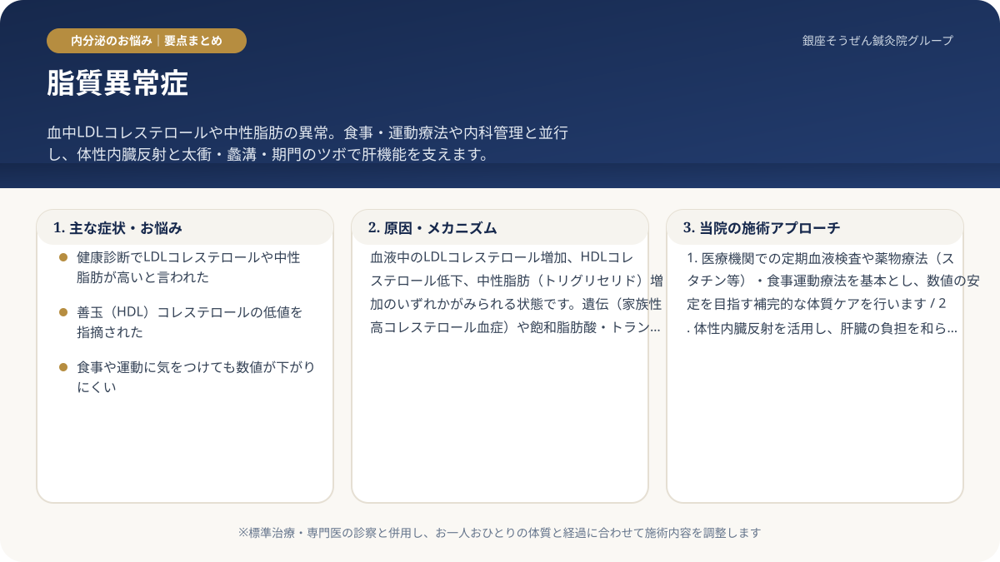

脂質異常症の鍼灸
血中LDLコレステロールや中性脂肪の異常。食事・運動療法や内科管理と並行し、体性内臓反射と太衝・蠡溝・期門のツボで肝機能を支えます。
まず知っておきたい要点と改善の流れ

血液中のLDLコレステロール増加、HDLコレステロール低下、中性脂肪（トリグリセリド）増加のいずれかがみられる状態です。遺伝（家族性高コレステロール血症）や飽和脂肪酸・トランス脂肪酸の過食、運動不足、肥満、喫煙、過度な飲酒、ストレス、肝・甲状腺疾患などが原因となります。コレステロールの7〜8割は肝臓で合成・調整されるため肝機能バランスも重要です。
このようなお悩みはありませんか？
- ✓健康診断でLDLコレステロールや中性脂肪が高いと言われた
- ✓善玉（HDL）コレステロールの低値を指摘された
- ✓食事や運動に気をつけても数値が下がりにくい
- ✓動脈硬化や脂肪肝への進行が心配になっている
当院の施術アプローチ・改善の流れ
なぜ鍼灸で改善へ向かうのか？（作用機序の図解）
脂質異常症に対する鍼灸は、神経-内分泌-免疫ネットワークと末梢循環の調整機序を通じて、お体本来の回復力を引き出します。

内科専門医の薬物・食事管理を前提に、足三里・三陰交・背部経穴へ安全にアプローチします。
ストレス由来の交感神経過緊張を鎮め、ホルモン分泌や血糖・尿酸管理を乱す疲労要因を軽減します。
手足や内臓の血流を促し、合併しやすいしびれ・胃もたれ・倦怠感・関節痛の負担を和らげます。
皮膚衛生や低刺激を徹底し、日々の生活習慣改善を続けやすい安定した体調づくりを支えます。
院長YouTube解説・関連動画
脂質異常症は、血液中の脂質が異常なレベルにある状態
脂質異常症は、血液中の脂質が異常なレベルにある状態のことです。高コレステロール血症、低H D Lコレステロール血症、高トリグリセリド血症の３つのタイプがある。
脂質異常症は体にとって悪いコレステロール値が高いことです。
脂質異常症には自覚症状がありません。そのため、脂質異常症が起こってもそのまま放っておく人も多いです。しかし、脂質が増えてしまうと脂質が血管の内側にたまって、動脈硬化や心筋梗塞、脳梗塞など病気を引き起こすこともあります。
脂質異常症は、早めに改善することが必要なのです。
コレステロールは脂質の一種で体内の多くの重要な機能に関与しています。コレステロールの基本構造は脂質の一種で細胞膜の構成成分として存在しています。水に溶けにくい性質を持っていて血中ではリポタンパク質という形で運ばれます。
コレステロールの役割は、細胞膜の構成、ホルモンの生成、ビタミンDの生成、胆汁の生成です。
主な原因は、遺伝、過食、脂肪分の摂り過ぎ、運動不足、ストレス
脂質異常症の主な原因は、遺伝、過食、脂肪分の摂り過ぎ、運動不足、ストレスなどです。
コレステロールの値が高くなる食生活は、脂肪の多い肉や卵、乳脂肪分の多いバター、チーズやカップ麺などを食べ過ぎることで、中性脂肪の値が上がる食生活は、果物や甘いお菓子の食べ過ぎやお酒の飲み過ぎることです。
このような食生活を続けると、コレステロールの値が高くなったり中性脂肪の値が高くなり、脂質異常症につながってしまいます。
喫煙は、善玉コレステロールの値を下げてしまうことになるため、脂質異常症につながりやすいと言われています。適度な運動をすることも大事です。運動をしないと、体の中で消費されるエネルギーが減るため、脂質の代謝が悪くなりやすいのです。
最近では、国内で脂質異常症の人が増えています。脂質異常症の人が増えている背景には、食の欧米化と運動不足があると考えられています。
食の欧米化が進んだことによって日本人も動物性脂肪の多い食事が増え、車が普及することなどによって慢性的に運動不足の状態になっていると言われており、これが脂質異常症に関係していると言われているのです。
ほとんどの脂質異常症は、成人した後の食生活や運動不足、体重が増えることなどが原因となって起こると考えられています。
1. 遺伝的要因
家族性高コレステロール血症：遺伝子の変異により、LDLコレステロール（悪玉コレステロール）の代謝が正常に行われず、血中のLDLコレステロールが高値を示す状態です。
遺伝的素因：特定の遺伝子変異が脂質代謝に影響を与え、脂質異常症のリスクを高めることがあります。
2. 環境的要因
・食生活
高脂肪食：飽和脂肪酸やトランス脂肪酸を多く含む食品（例えば、揚げ物、加工食品、ファストフードなど）の摂取は、LDLコレステロールを増加させます。
コレステロール摂取：卵黄や内臓類などのコレステロールを多く含む食品の摂取が、血中コレステロール値を上昇させることがあります。
低繊維食：食物繊維の不足は、コレステロールの排泄を妨げ、血中コレステロール値の上昇に寄与します。
・運動不足
運動不足：運動不足は、HDLコレステロール（善玉コレステロール）の低下を招き、LDLコレステロールやトリグリセリドの増加を引き起こします。適度な運動は脂質代謝を改善し、脂質異常症の予防に役立ちます。
・体重と肥満
肥満：特に内臓脂肪の蓄積は、インスリン抵抗性を引き起こし、トリグリセリドの上昇やHDLコレステロールの低下をもたらします。
・アルコールの過剰摂取
アルコール：適度なアルコール摂取はHDLコレステロールを増加させることがありますが、過剰な摂取はトリグリセリドの上昇を引き起こすことがあります。
3. 基礎的な病気
糖尿病：インスリン抵抗性により、トリグリセリドの上昇やHDLコレステロールの低下が見られます。
甲状腺機能低下症：甲状腺ホルモンの不足により、脂質代謝が低下し、LDLコレステロールが上昇します。
肝疾患：肝臓は脂質代謝に重要な役割を果たすため、肝疾患が脂質異常症を引き起こすことがあります。
腎疾患：腎臓の機能低下により、脂質代謝が異常をきたし、コレステロールやトリグリセリドが上昇します。
4. 薬剤
利尿薬：チアジド系利尿薬はトリグリセリドを増加させることがあります。
ベータ遮断薬：一部のベータ遮断薬はHDLコレステロールを低下させ、トリグリセリドを増加させることがあります。
ホルモンの薬：エストロゲンやプロゲステロンなどのホルモンの薬も脂質異常症に影響を与えることがあります。
5. 喫煙
喫煙の影響：喫煙は酸化ストレスを増加させ、血中の脂質バランスを崩し、脂質異常症のリスクを高めます。
脂質異常症には自覚症状がない
脂質異常症は、自覚症状がほとんどありません。
定期的に体を調べている時、初めて脂質異常症であることがわかることがほとんどです。病院で数値が異常であるということがわかって初めて脂質異常症は判明するのです。そのため、脂質異常症から知らない間に動脈硬化が起こることも多いです。
脂質異常症は他の病気が起こることによって発症する続発性のものもあります。甲状腺機能低下症や副腎皮質ホルモンの分泌異常、糖尿病、腎臓病、肝臓病などが起こることによって脂質異常症を起こすことがあるのです。
病気によって起こる脂質異常症は、病気の症状がきっかけで脂質異常症であるとわかることもあります。
1. 無症状の期間
初期の脂質異常症：脂質異常症は初期にはほとんど自覚症状がありません。定期的に調べた時に血液中のコレステロールやトリグリセリドの値が高いことが判明することが多いです。
2. 動脈硬化の進行
狭心症：心臓の冠動脈が狭くなることで、胸痛や圧迫感が生じます。特に運動時やストレスを感じたときに症状が現れやすいです。
心筋梗塞：冠動脈が完全に閉塞すると、心筋梗塞が発生します。激しい胸痛、息切れ、発汗、吐き気などの症状が見られます。これは緊急の医療対応が必要です。
脳卒中：脳の動脈が閉塞することで、脳卒中が発生します。突然の片側の麻痺、言語障害、視覚障害、意識喪失などの症状が現れます。
3. 周囲の血管の異常
末梢動脈疾患（PAD）：脚や腕の動脈が狭くなることで、歩行時の痛み（間欠性跛行）、脚や足のしびれ、冷感などの症状が現れます。
大動脈瘤：大動脈の一部が膨らむことで、破裂のリスクが高まります。破裂すると急激な腹痛や背中の痛みが生じ、命に関わる緊急事態となります。
4. 皮膚や目に現れる症状
黄色腫：皮膚の下にコレステロールが沈着して黄色い塊（黄色腫）が形成されることがあります。特に眼瞼や肘、膝、指関節などに現れやすいです。
角膜輪：眼の角膜周辺に白い輪ができることがあります。これもコレステロールの沈着によるものです。
5. 肝臓の異常
脂肪肝：肝臓に過剰な脂肪が蓄積されることで、肝機能が低下します。初期は無症状ですが、進行すると肝炎や肝硬変に至ることがあります。
脂質異常症の改善策としては、食事や運動、生活習慣で対応できます。トランス脂肪酸、飽和脂肪酸といった肉やマーガリンといった体に悪い脂肪を減らして、オメガ３脂肪酸を含む食品を多く取ることが推奨されています。
また、定期的な有酸素運動や禁煙もH D Lを増やす効果があることがわかっています。
脂質異常症の改善には、高くなったコレステロールや中性脂肪の値を改善することが必要です。目標とする値は、年齢や性別、高血圧や糖尿病があるか、喫煙の習慣があるか、家族の既往歴があるかなどの情報から設定されます。
まず行うことは、食生活の改善です。2020年、厚労労働省によって、脂質異常症がある場合は重症にならないためにコレステロールの摂取量を1日200mg未満に抑えることが望ましいということが発表されています。
定期的な有酸素運動は、1日30分以上行うことが勧められています。改善に良いとされている有酸素運動とは、ウォーキングや水泳、サイクリングなどです。
このように食事や生活習慣を改善することが脂質異常症の改善のためにまず自分でできることです。食事や生活習慣を変えても数値が改善されない場合は、内服薬などを使って改善を行うこともあります。
動脈硬化の傾向がある人や糖尿病などの病気を合わせて起こしている人などは、特に脂質異常症を早く改善する必要があります。そのために、コレステロールや中性脂肪を下げる薬を使って改善を行うことが多いです。
1. 食生活の改善
・飽和脂肪酸とトランス脂肪酸の摂取制限
飽和脂肪酸：肉の脂身やバター、ラード、パーム油などに含まれる飽和脂肪酸の摂取を減らします。これにより、LDLコレステロール（悪玉コレステロール）のレベルを下げることができます。
トランス脂肪酸：加工食品やマーガリン、ファストフードに多く含まれるトランス脂肪酸の摂取を避けます。トランス脂肪酸は、LDLコレステロールを増加させ、HDLコレステロール（善玉コレステロール）を減少させます。
・健康的な脂肪の摂取
不飽和脂肪酸：オリーブオイル、キャノーラ油、アボカド、ナッツ、魚（特に青魚）などに含まれる不飽和脂肪酸を積極的に摂取します。不飽和脂肪酸は、LDLコレステロールを減少させ、HDLコレステロールを増加させます。
オメガ-3脂肪酸：サーモン、マグロ、サバ、イワシなどの魚や、亜麻仁油、チアシードに含まれるオメガ-3脂肪酸は、トリグリセリドを減少させ、心血管の健康を促進します。
・食物繊維の摂取
水溶性食物繊維：オート麦、大麦、豆類、果物、野菜などに含まれる水溶性食物繊維は、腸内でコレステロールの吸収を抑え、LDLコレステロールのレベルを下げます。
・コレステロールの摂取制限
コレステロールを多く含む食品：卵黄、内臓類、エビなどのコレステロールを多く含む食品の摂取を控えます。ただし、最近の研究では、食事からのコレステロール摂取が血中コレステロールに与える影響は個人差が大きいことが示唆されています。
2. 運動習慣の改善
・有酸素運動
有酸素運動：ウォーキング、ジョギング、サイクリング、水泳などの有酸素運動を週に150分以上行うことが推奨されます。有酸素運動は、HDLコレステロールを増加させ、LDLコレステロールやトリグリセリドを減少させます。
・筋力トレーニング
筋力トレーニング：筋力トレーニングを週に2回以上行うことで、脂質代謝を改善し、心血管の健康を促進します。
3. 体重管理
減量：肥満や過体重の場合、体重を5-10％減少させることで、LDLコレステロールやトリグリセリドのレベルを大幅に改善できます。
体重維持：適正体重を維持するために、バランスの取れた食事と定期的な運動を続けます。
4. 禁煙
禁煙プログラム：医師や専門家のサポートを受けて禁煙プログラムに参加し、喫煙をやめるための戦略を学びます。
5. アルコールの制限
適度なアルコール摂取はHDLコレステロールを増加させることがありますが、過剰な摂取はトリグリセリドを増加させます。
適度な摂取：アルコールの摂取は、男性で1日2杯、女性で1日1杯を超えないようにします。
6. 薬
スタチン：LDLコレステロールを効果的に下げる薬物で、心血管疾患のリスクを減少させます。
フィブラート：トリグリセリドを減少させ、HDLコレステロールを増加させる薬物です。
エゼチミブ：腸でのコレステロール吸収を抑制し、LDLコレステロールを下げる薬物です。
コレステロールの代謝と調整
コレステロールは、肝臓で生成され食事から摂取されています。７０〜８０%は肝臓で合成され、残りの２０〜３０%は食事で摂取されるため、食事を気をつけても２〜３割程度しか調整できません。
ポイントは肝臓の調整です。コレステロールの合成と排出を調整し、体内のコレステロールレベルをバランスよく保ってくれているため、肝臓のエラーがコレステロールを引き上げることにつながります。
肝臓はフィードバック調整とL D L受容体の役割でコレステロールバランスを保っています。肝臓は体内のコレステロールレベルをモニターし、必要に応じてこれステロールの合成を増減しているのです。
食事でステーキやマーガリンたっぷりの朝ごはんばかり食べてしまうと肝臓がコレステロールの合成を減らして調整しようとします。
肝臓の細胞の表面にあるL D L受容体は血中のL D Lコレステロールを取り込んで分解しています。そのため、受容体の数が減少するとL D Lコレステロールが上昇する可能性があるのです。
年齢を重ねて受容体が劣化し、センサーが悪くなると血中のL D Lレベルが上がります。肝臓の状態を正常に保つことができればコレステロールの生成を抑えることができるのです。
その他の要因は、
・食事では高脂肪食やコレステロールを多く含む食品の摂取
・運動不足
・遺伝的要素（家族性高コレステロール血症）
・アルコールの過剰摂取
などです。
家族性高コレステロール血症は、元々肝臓に存在しているL D L受容体の数が少なかったり 機能が低下していたりする場合に血中のL D Lコレステロールが非常に高くなる病気です。
アルコールではトリグリセリドが増加し、肝臓に負担がかかりコレステロールの増加を促します。
・健康的な食事
健康的な食事の1番大事なことは脂肪の選択です。オリーブオイルやナッツ、種子、魚などの不飽和脂肪酸を含む食品を選びましょう。食物繊維の摂取、低脂肪食の実践も大事です。当院では、食品成分表を見いて脂質が少ない食べ物を食べるようにアドバイスをしています。脂質の量を抑えたら簡単にコレステロールが下がります。
・有酸素運動
・アルコールの適切な摂取
薬で対応する場合は肝臓のコレステロールの合成を妨げ、血中のコレステロールの値を効果的に下げる薬を使います。ポイントは肝臓です。
脂質異常症は、健康的な生活を送ることが非常に大切です。暴飲暴食は避けて適度に運動することを習慣にしましょう。
現代人の食事は、気が付かない間にカロリー過多になりやすいです。肉や揚げ物などのカロリーの高いメニューが増えたためです。間食でケーキなどの甘いものを食べるような食習慣がある人も慢性的なカロリー過多になっています。
ご飯やパンなどの主食の穀物は、脂質が少ないです。主食をきちんと食べ、動物性脂肪である肉類を少なめにすると良いでしょう。
肉を食べるときには、牛肉や豚肉ではロースよりヒレを選んだり、鶏肉では皮を食べないようにしたりなど、少し工夫をすると脂質を大きく減らすことができます。
動物性脂肪を積極的に摂ることも悪玉コレステロールを減らすために効果的です。魚に多くふくまれている不飽和脂肪酸には、悪玉コレステロールを減らす働きがあるためです。
魚に多く含まれている不飽和脂肪酸の代表は、EPAとDHAです。EPAとDHAは、サバやイワシ、サンマなどの青魚に特に多く含まれています。他にも、マグロの赤身やタイなどにも多く含まれているため、料理に取り入れると良いでしょう。
おかずでは肉ではなく魚を積極的に摂るようにしましょう。魚を摂取する際には、焼き魚より刺身や煮魚のほうがEPAやDHAを効率よく摂ることができるため料理を工夫することも効果的です。
内分泌・糖尿病・甲状腺・代謝の全身ツボ図解
実際の施術ではお一人おひとりの体質・症状に合わせて選穴しますが、糖尿病合併症・甲状腺機能異常・メタボリック・代謝異常の併用サポートの臨床でよく用いられる代表的なツボの目安です。

📌 代表的なツボの詳細一覧表を開く（6穴） ▼
| ツボ名 | 位置の目安 | 主な狙い | セルフケアの注意点 |
|---|---|---|---|
| 脾兪（ひゆ） | 背中の中央やや下、背骨の外側 | 糖代謝・消化吸収・食後のだるさサポート | 糖尿病・甲状腺疾患は必ず内分泌内科の標準治療を最優先します。 |
| 腎兪（じんゆ） | 腰のくびれの高さ、背骨の外側 | 内分泌系・倦怠感・冷えとむくみの土台づくり | 糖尿病神経障害がある場合は火傷防止のため強い熱刺激を避けます。 |
| 中脘（ちゅうかん） | みぞおちとおへその中間 | 胃腸機能・糖尿病性胃不全麻痺の自律神経サポート | 食後すぐの強圧迫は避け穏やかに整えます。 |
| 関元（かんげん） | おへそから指4本分下 | 基礎代謝・下腹部の巡りと疲労回復補助 | 低血糖症状（冷や汗・震え）があるときは直ちに補食してください。 |
| 足三里（あしさんり） | 膝の下外側、指4本分下 | 下肢の末梢循環・神経障害予防の全身調整 | 足先に傷や潰瘍がある場合は絶対に患部へ施術しません。 |
| 三陰交（さんいんこう） | 内くるぶしの上から指4本分上 | ホルモン・代謝・睡眠と末梢血流の調和 | 厳格な衛生管理と低刺激で安全に継続します。 |
国際査読論文の科学的エビデンス
国際的な医学データベース（PubMed・Cochrane等）で報告されている糖尿病合併症・甲状腺機能異常・メタボリック・代謝異常の併用サポート領域の代表的な査読済み鍼灸研究をまとめています（標準治療との併用や研究上の限界を含めて正確に掲載）。
📚 査読論文データ・PubMed出典リンクを開く（4件） ▼
| 年・研究デザイン | 対象・規模 | 主な結果 | 限界・出典 |
|---|---|---|---|
| 2026年 メタ解析 | 2型糖尿病 20 RCTs（n=1,479） | 空腹時血糖（SMD -0.52, p=0.009）、HbA1c（SMD -0.76, p=0.002）、HOMA-IR（p<0.0001）を有意低減。 | 将来研究のばらつき懸念。食事・運動・薬物療法の継続必須。 Postgrad Med J (PMID: 41052150) |
| 2025年 メタ解析 | 糖尿病性末梢神経障害（DPN）14 RCTs（n=1,169） | 偽鍼比でVAS疼痛-1.44cm、神経症状スコアTCSSも有意改善（WMD -1.22）。 | GRADE確実性は低い。足部の熱傷・感染予防に細心の注意。 Curr Pain Headache Rep (PMID: 40220243) |
| 2024年 メタ解析 | 橋本病（慢性甲状腺炎）14 RCTs（n=1,020） | レボチロキシン単独比でTPOAb・TGAb低下およびTSH・FT3・FT4の調整を示唆（p<0.00001）。 | 中国国内RCT中心・盲検化不足。甲状腺薬の自己中断は厳禁。 Medicine (PMID: 38428856) |
| 2024年 メタ解析 | 単純性肥満 25 RCTs（n=2,018・生活習慣併用） | 生活習慣単独比で体重-4.73・BMI -2.11・腹囲-4.96（p<0.00001）、中性脂肪・LDLも有意改善。 | 介入期間・方法の異質性高、長期リバウンド防止は要検証。 Diabetes Metab Syndr Obes (PMID: 39582784) |
参考文献・出典
- 2026年 メタ解析（2型糖尿病 20 RCTs（n=1,479））— Postgrad Med J (PMID: 41052150)
- 2025年 メタ解析（糖尿病性末梢神経障害（DPN）14 RCTs（n=1,169））— Curr Pain Headache Rep (PMID: 40220243)
- 2024年 メタ解析（橋本病（慢性甲状腺炎）14 RCTs（n=1,020））— Medicine (PMID: 38428856)
- 2024年 メタ解析（単純性肥満 25 RCTs（n=2,018・生活習慣併用））— Diabetes Metab Syndr Obes (PMID: 39582784)
よくある質問（FAQ）
Q. 食事制限をしているのにコレステロールが下がらないのはなぜですか？▼
Q. 脂質異常症のセルフケアにおすすめのツボはありますか？▼
あわせて読まれる関連疾患（内分泌のお悩み）
血管が硬く柔軟性を失う状態。医療機関での生活習慣病管理と並行し、合谷・内関・太衝のツボや自律神経ケアで巡りを支えます。
皮膚の下に余分な水分がたまる状態。腎臓・心臓・肝臓等の基礎疾患確認を優先し、血流低下や自律神経由来のむくみを穏やかに整えます。
脳下垂体の良性腫瘍により成長ホルモンが過剰分泌される疾患。専門医の手術・薬物療法と合併症管理を最優先し、安定期の体調ケアを補完します。
下垂体前葉ホルモンの分泌低下で全身の代謝や血圧・性機能に影響する疾患。専門医のホルモン補充を最優先し、安定期の体調管理を補完します。
粘液腫・皮膚色素斑・内分泌機能亢進を伴う多発性腫瘍症候群。専門医の定期検査と治療を最優先し、安定期の心身ケアを穏やかに補完します。
植物ステロールが体内に蓄積し黄色腫や早発性動脈硬化を招く希少遺伝疾患。専門医の管理を軸に、安定期の体調・自律神経ケアを補完します。
CLINICAL RECOVERY CASES
✨ 実際の臨床改善事例・回復経過を見る
銀座本院をはじめ各院での実際の改善事例を症状別に絞り込んでご確認いただけます。
おひとりで悩まず、まずはご相談ください
銀座本院・川口・大宮・横浜・博多・田無の各院でご予約を承っております。